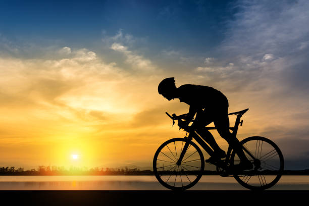

- These are some of the interesting facts about football
- Football was invented by Walter Camp.
- Britain was the country which started to play football
- For more information about football click on the picture below.

Football
- These are some of the interesting facts about Badminton
- Badminton was invented by Duke of Beaufort in 1873.
- Earlier Badminton was known as Poona.
- Badminton is total body workout game.
- To know some more facts and rules about badminton click on the picture below.

Badminton
- These are som of the interesting facts about cricket
- England was the country which founded cricket.
- The current best batsman in the world is Virat Kohli.
- To know some more facts about cricket click the picture below.

Cricket
- These are some of the interesting facts about cycling.
- The term bicycle was coined in France in the 1860s.
- The first means of transport making use of two wheels arranged consecutively.
- To know some more facts about cycling click on the picture below.

Cycling
- These are some of the interesting facts about archery.
- Archery was the favourite sport of the Egyptian Pharaorhs during 18th dynasty.
- North Africa had invented Archery.
- To know some more facts about archery click on the picture below.

Archery